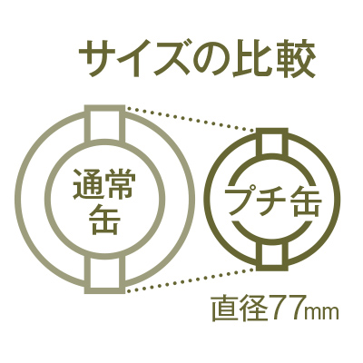
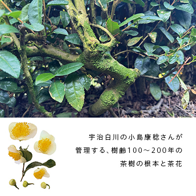
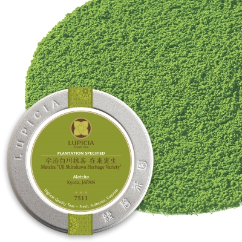

宇治白川抹茶 在来実生
宇治白川抹茶 在来実生




樹齢100年の余韻を味わう。宇治抹茶の王者の風格。
千利休ゆかりの名産地の、樹齢100年を超える茶樹による希少な抹茶。力強い香気と豊かなコクの逸品です。
樹齢130年の余韻を味わう 宇治抹茶の王者の風格
文政年間（1818〜1831年）より宇治茶の伝統を守り抜く「山音 萬玉園」。その代表である小島康稔氏が手掛ける、樹齢130年の古木から生まれた希少な石臼挽き抹茶です。
舌の奥に重厚に響く深いコクと、飲み干した後にふわりと立ち昇る芳醇な香り。時を経て真髄を極めた至高の一服を、心ゆくまでご堪能ください。
【宇治白川抹茶 在来実生】とは
在来種とは、長い年月をかけてその土地の気候や風土に適応しながら受け継がれてきた生物や植物の品種のことです。
宇治白川抹茶 在来実生は名産地宇治・白川の土地で約130年間育成されてきた茶樹から摘採された貴重な茶葉を使い、名人によって作られた特別な抹茶です。
長い歴史の中でも、今年作られた一杯は二度と味わうことができないという、希少な体験をぜひお楽しみください。
【宇治・白川地区 について】
京都府宇治市白川地区は美しい山に囲まれ、澄んだ空気と日中の寒暖差が特徴的な歴史ある宇治茶の産地です。
水はけのよい砂質土壌の地質は本簀や寒冷紗を使用した高品質な玉露・碾茶の栽培に適しており、国内外から注目を集めています。
【山音 萬玉園 小島氏 について】
文政年間（1818〜1831年）より宇治茶の栽培・製造・販売に携わる、山音 萬玉園 代表 小島康稔氏。
萬玉園の抹茶は、品種や土質ごとの個性を引き出した、お茶本来の味わいが特徴。宇治ならではの美しい水色、豊かな香気、深い滋味を堪能できます。
長年培われてきた素晴らしい環境を享受するだけを良しとせず、常にそのすべてと真摯に向き合い最高品を作り上げてきた名人です。
- 상품번호
- 7511
- 상품 형태
- 20g 쁘띠캔입
- 가격
- 4,000円
- 판매 안내
- ※기간・수량한정
※통신 판매・일부 점포한정 판매※取り寄せ可
※상미기한：제조일로부터반년 - 원재료
- 緑茶※商品の改定などにより、商品パッケージの記載内容が上記内容と一部異なる場合がございます。
- 원산지
- 日本（茶）※商品の改定などにより、商品パッケージの記載内容が上記内容と一部異なる場合がございます。